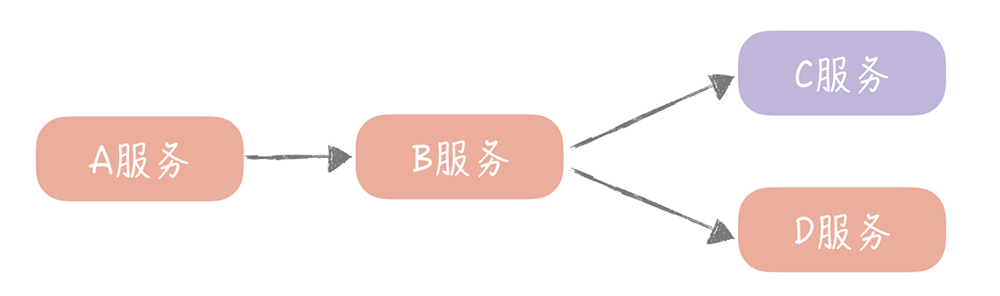

- 00 开篇词 为什么你要学习高并发系统设计？.md.html
- 01 高并发系统：它的通用设计方法是什么？.md.html
- 02 架构分层：我们为什么一定要这么做？.md.html
- 03 系统设计目标（一）：如何提升系统性能？.md.html
- 04 系统设计目标（二）：系统怎样做到高可用？.md.html
- 05 系统设计目标（三）：如何让系统易于扩展？.md.html
- 06 面试现场第一期：当问到组件实现原理时，面试官是在刁难你吗？.md.html
- 07 池化技术：如何减少频繁创建数据库连接的性能损耗？.md.html
- 08 数据库优化方案（一）：查询请求增加时，如何做主从分离？.md.html
- 09 数据库优化方案（二）：写入数据量增加时，如何实现分库分表？.md.html
- 10 发号器：如何保证分库分表后ID的全局唯一性？.md.html
- 11 NoSQL：在高并发场景下，数据库和NoSQL如何做到互补？.md.html
- 12 缓存：数据库成为瓶颈后，动态数据的查询要如何加速？.md.html
- 13 缓存的使用姿势（一）：如何选择缓存的读写策略？.md.html
- 14 缓存的使用姿势（二）：缓存如何做到高可用？.md.html
- 15 缓存的使用姿势（三）：缓存穿透了怎么办？.md.html
- 16 CDN：静态资源如何加速？.md.html
- 17 消息队列：秒杀时如何处理每秒上万次的下单请求？.md.html
- 18 消息投递：如何保证消息仅仅被消费一次？.md.html
- 19 消息队列：如何降低消息队列系统中消息的延迟？.md.html
- 20 面试现场第二期：当问到项目经历时，面试官究竟想要了解什么？.md.html
- 21 系统架构：每秒1万次请求的系统要做服务化拆分吗？.md.html
- 22 微服务架构：微服务化后，系统架构要如何改造？.md.html
- 23 RPC框架：10万QPS下如何实现毫秒级的服务调用？.md.html
- 24 注册中心：分布式系统如何寻址？.md.html
- 25 分布式Trace：横跨几十个分布式组件的慢请求要如何排查？.md.html
- 26 负载均衡：怎样提升系统的横向扩展能力？.md.html
- 27 API网关：系统的门面要如何做呢？.md.html
- 28 多机房部署：跨地域的分布式系统如何做？.md.html
- 29 Service Mesh：如何屏蔽服务化系统的服务治理细节？.md.html
- 30 给系统加上眼睛：服务端监控要怎么做？.md.html
- 31 应用性能管理：用户的使用体验应该如何监控？.md.html
- 32 压力测试：怎样设计全链路压力测试平台？.md.html
- 33 配置管理：成千上万的配置项要如何管理？.md.html
- 34 降级熔断：如何屏蔽非核心系统故障的影响？.md.html
- 35 流量控制：高并发系统中我们如何操纵流量？.md.html
- 36 面试现场第三期：你要如何准备一场技术面试呢？.md.html
- 37 计数系统设计（一）：面对海量数据的计数器要如何做？.md.html
- 38 计数系统设计（二）：50万QPS下如何设计未读数系统？.md.html
- 39 信息流设计（一）：通用信息流系统的推模式要如何做？.md.html
- 40 信息流设计（二）：通用信息流系统的拉模式要如何做？.md.html
- 加餐 数据的迁移应该如何做？.md.html
- 期中测试 10道高并发系统设计题目自测.md.html
- 用户故事 从“心”出发，我还有无数个可能.md.html
- 结束语 学不可以已.md.html
- 捐赠
34 降级熔断：如何屏蔽非核心系统故障的影响？
你好，我是唐扬。
到目前为止，你的电商系统已经搭建了完善的服务端和客户端监控系统，并且完成了全链路压测。现在呢，你们已经发现和解决了垂直电商系统中很多的性能问题和隐患。但是千算万算，还是出现了纰漏。
本来，你们对于应对“双十一”的考验信心满满，但因为欠缺了一些面对巨大流量的经验，在促销过程中出现了几次短暂的服务不可用，这给部分用户造成了不好的使用体验。事后，你们进行了细致的复盘，追查出现故障的根本原因，你发现，原因主要可以归结为两大类。
第一类原因是由于依赖的资源或者服务不可用，最终导致整体服务宕机。举例来说，在你的电商系统中就可能由于数据库访问缓慢，导致整体服务不可用。
另一类原因是你们乐观地预估了可能到来的流量，当有超过系统承载能力的流量到来时，系统不堪重负，从而出现拒绝服务的情况。
那么，你要如何避免再次出现这两类问题呢？我建议你采取降级、熔断以及限流的方案。限流是解决第二类问题的主要思路（下一节课，我会着重讲解）。今天这节课，我主要讲一下解决第一类问题的思路：降级和熔断。
不过在此之前，我先带你了解一下这个问题为何存在，因为你只有弄清楚出现故障的原理，才能更好地理解熔断降级带来的好处。
雪崩是如何发生的
局部故障最终导致全局故障，这种情况有一个专业的名词儿，叫做“雪崩”。那么，为什么会发生雪崩呢？我们知道，系统在运行的时候是需要消耗一些资源的，包括 CPU、内存等系统资源，也包括执行业务逻辑的时候，需要的线程资源。
举个例子，一般在业务执行的容器内，都会定义一些线程池来分配执行任务的线程，比如在 Tomcat 这种 Web 容器的内部，定义了线程池来处理 HTTP 请求；RPC 框架也给 RPC 服务端初始化了线程池来处理 RPC 请求。
这些线程池中的线程资源是有限的，如果这些线程资源被耗尽，那么服务自然也就无法处理新的请求，服务提供方也就宕机了。比如，你的垂直电商系统有四个服务 A、B、C、D，A 调用 B，B 调用 C 和 D。其中，A、B、D 服务是系统的核心服务（像是电商系统中的订单服务、支付服务等等），C 是非核心服务（像反垃圾服务、审核服务）。
所以，一旦作为入口的 A 流量增加，你可能会考虑把 A、B 和 D 服务扩容，忽略 C。那么 C 就有可能因为无法承担这么大的流量，导致请求处理缓慢，进一步会让 B 在调用 C 的时候，B 中的请求被阻塞，等待 C 返回响应结果。这样一来，B 服务中被占用的线程资源就不能释放。
久而久之，B 就会因为线程资源被占满，无法处理后续的请求。那么从 A 发往 B 的请求，就会被放入 B 服务线程池的队列中，然后 A 调用 B 响应时间变长，进而拖垮 A 服务。你看，仅仅因为非核心服务 C 的响应时间变长，就可以导致整体服务宕机，这就是我们经常遇到的一种服务雪崩情况。

那么我们要如何避免出现上面这种情况呢？从我刚刚的介绍中你可以看到，因为服务调用方等待服务提供方的响应时间过长，它的资源被耗尽，才引发了级联反应，发生雪崩。
所以在分布式环境下，系统最怕的反而不是某一个服务或者组件宕机，而是最怕它响应缓慢，因为，某一个服务或者组件宕机也许只会影响系统的部分功能，但它响应一慢，就会出现雪崩拖垮整个系统。
而我们在部门内部讨论方案的时候，会格外注意这个问题，解决的思路就是在检测到某一个服务的响应时间出现异常时，切断调用它的服务与它之间的联系，让服务的调用快速返回失败，从而释放这次请求持有的资源。这个思路也就是我们经常提到的降级和熔断机制。
那么降级和熔断分别是怎么做的呢？它们之间有什么相同点和不同点呢？你在自己的项目中要如何实现熔断降级呢？
熔断机制是如何做的
首先，我们来看看熔断机制的实现方式。这个机制参考的是电路中保险丝的保护机制，当电路超负荷运转的时候，保险丝会断开电路，保证整体电路不受损害。而服务治理中的熔断机制指的是在发起服务调用的时候，如果返回错误或者超时的次数超过一定阈值，则后续的请求不再发向远程服务而是暂时返回错误。
这种实现方式在云计算领域又称为断路器模式，在这种模式下，服务调用方为每一个调用的服务维护一个有限状态机，在这个状态机中会有三种状态：关闭（调用远程服务）、半打开（尝试调用远程服务）和打开（返回错误）。这三种状态之间切换的过程是下面这个样子。
当调用失败的次数累积到一定的阈值时，熔断状态从关闭态切换到打开态。一般在实现时，如果调用成功一次，就会重置调用失败次数。
当熔断处于打开状态时，我们会启动一个超时计时器，当计时器超时后，状态切换到半打开态。你也可以通过设置一个定时器，定期地探测服务是否恢复。
在熔断处于半打开状态时，请求可以达到后端服务，如果累计一定的成功次数后，状态切换到关闭态；如果出现调用失败的情况，则切换到打开态。

其实，不仅仅微服务之间调用需要熔断的机制，我们在调用 Redis、Memcached 等资源的时候也可以引入这套机制。在我的团队自己封装的 Redis 客户端中，就实现了一套简单的熔断机制。首先，在系统初始化的时候，我们定义了一个定时器，当熔断器处于 Open 状态时，定期地检测 Redis 组件是否可用：
new Timer("RedisPort-Recover", true).scheduleAtFixedRate(new TimerTask() {
@Override
public void run() {
if (breaker.isOpen()) {
Jedis jedis = null;
try {
jedis = connPool.getResource();
jedis.ping(); // 验证 redis 是否可用
successCount.set(0); // 重置连续成功的计数
breaker.setHalfOpen(); // 设置为半打开态
} catch (Exception ignored) {
} finally {
if (jedis != null) {
jedis.close();
}
}
}
}
}, 0, recoverInterval); // 初始化定时器定期检测 redis 是否可用
在通过 Redis 客户端操作 Redis 中的数据时，我们会在其中加入熔断器的逻辑。比如，当节点处于熔断状态时，直接返回空值以及熔断器三种状态之间的转换，具体的示例代码像下面这样：
if (breaker.isOpen()) {
return null; // 断路器打开则直接返回空值
}
K value = null;
Jedis jedis = null;
try {
jedis = connPool.getResource();
value = callback.call(jedis);
if(breaker.isHalfOpen()) { // 如果是半打开状态
if(successCount.incrementAndGet() >= SUCCESS_THRESHOLD) {// 成功次数超过阈值
failCount.set(0); // 清空失败数
breaker.setClose(); // 设置为关闭态
}
}
return value;
} catch (JedisException je) {
if(breaker.isClose()){ // 如果是关闭态
if(failCount.incrementAndGet() >= FAILS_THRESHOLD){ // 失败次数超过阈值
breaker.setOpen(); // 设置为打开态
}
} else if(breaker.isHalfOpen()) { // 如果是半打开态
breaker.setOpen(); // 直接设置为打开态
}
throw je;
} finally {
if (jedis != null) {
jedis.close();
}
}
这样，当某一个 Redis 节点出现问题，Redis 客户端中的熔断器就会实时监测到，并且不再请求有问题的 Redis 节点，避免单个节点的故障导致整体系统的雪崩。
降级机制要如何做
除了熔断之外，我们在听业内分享的时候，听到最多的服务容错方式就是降级，那么降级又是怎么做的呢？它和熔断有什么关系呢？
其实在我看来，相比熔断来说，降级是一个更大的概念。因为它是站在整体系统负载的角度上，放弃部分非核心功能或者服务，保证整体的可用性的方法，是一种有损的系统容错方式。这样看来，熔断也是降级的一种，除此之外还有限流降级、开关降级等等（限流降级我会在下一节课中提到，这节课主要讲一下开关降级）。
开关降级指的是在代码中预先埋设一些“开关”，用来控制服务调用的返回值。比方说，开关关闭的时候正常调用远程服务，开关打开时则执行降级的策略。这些开关的值可以存储在配置中心中，当系统出现问题需要降级时，只需要通过配置中心动态更改开关的值，就可以实现不重启服务快速地降级远程服务了。
还是以电商系统为例，你的电商系统在商品详情页面除了展示商品数据以外，还需要展示评论的数据，但是主体还是商品数据，在必要时可以降级评论数据。所以，你可以定义这个开关为“degrade.comment”，写入到配置中心中，具体的代码也比较简单，就像下面这样：
boolean switcherValue = getFromConfigCenter("degrade.comment"); // 从配置中心获取开关的值
if (!switcherValue) {
List<Comment> comments = getCommentList(); // 开关关闭则获取评论数据
} else {
List<Comment> comments = new ArrayList(); // 开关打开，则直接返回空评论数据
}
当然了，我们在设计开关降级预案的时候，首先要区分哪些是核心服务，哪些是非核心服务。因为我们只能针对非核心服务来做降级处理，然后就可以针对具体的业务，制定不同的降级策略了。我给你列举一些常见场景下的降级策略，你在实际的工作中可以参考借鉴。
针对读取数据的场景，我们一般采用的策略是直接返回降级数据。比如，如果数据库的压力比较大，我们在降级的时候，可以考虑只读取缓存的数据，而不再读取数据库中的数据；如果非核心接口出现问题，可以直接返回服务繁忙或者返回固定的降级数据。
对于一些轮询查询数据的场景，比如每隔 30 秒轮询获取未读数，可以降低获取数据的频率（将获取频率下降到 10 分钟一次）。
而对于写数据的场景，一般会考虑把同步写转换成异步写，这样可以牺牲一些数据一致性和实效性来保证系统的可用性。
我想强调的是，只有经过演练的开关才是有用的开关，有些同学在给系统加了开关之后并不测试，结果出了问题真要使用的时候，却发现开关并不生效。因此，你在为系统增加降级开关时，一定要在流量低峰期的时候做验证演练，也可以在不定期的压力测试过程中演练，保证开关的可用性。
课程小结
以上就是本节课的全部内容了。本节课我带你了解了雪崩产生的原因，服务熔断的实现方式以及服务降级的策略，这里你需要了解的重点是：
在分布式环境下最怕的是服务或者组件慢，因为这样会导致调用者持有的资源无法释放，最终拖垮整体服务。
服务熔断的实现是一个有限状态机，关键是三种状态之间的转换过程。
开关降级的实现策略主要有返回降级数据、降频和异步三种方案。
其实，开关不仅仅应该在你的降级策略中使用，在我的项目中，只要上线新的功能必然要加开关控制业务逻辑是运行新的功能还是运行旧的功能。这样，一旦新的功能上线后，出现未知的问题（比如性能问题），那么可以通过切换开关的方式来实现快速地回滚，减少问题的持续时间。
总之，熔断和降级是保证系统稳定性和可用性的重要手段，在你访问第三方服务或者资源的时候都需要考虑增加降级开关或者熔断机制，保证资源或者服务出现问题时，不会对整体系统产生灾难性的影响。
© 2019 - 2023 Liangliang Lee. Powered by gin and hexo-theme-book.